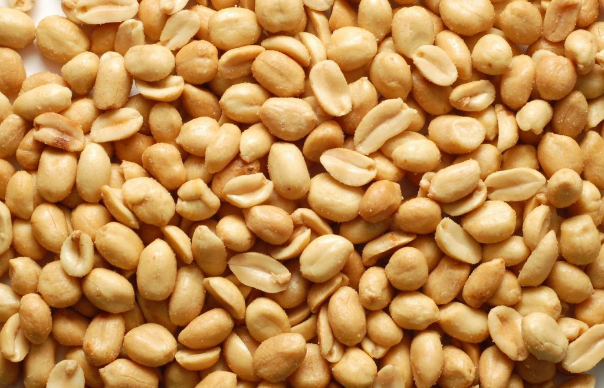
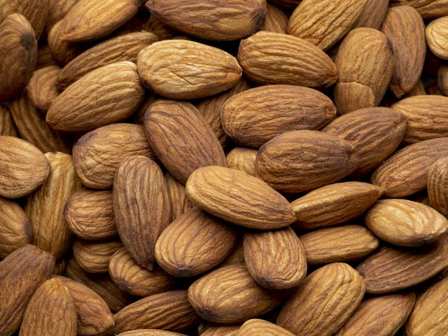

Nuestros Productos
- Mix de Frutos Secos
- Nueces
- Pistacho
- Almendras
- Mani


Castañas de Caju Tostadas
Castañas de Caju de sabor agridulce, excelentes para picadas o aperitivos
Añadir al carroNueces
Excelentes para uso en reposteria, heladeria, pan dulce. Buena eleccion para picadas
Añadir al carroPasas de Uva
Favorece el transtito instestinal y colabora en regulacion de balance de liquidos
Añadir al carro

Almendras
Aporta vitamina E y alto contenido en fibra. Ideal para estimular movimientos intestinales
Añadir al carroGarbanzos
Ideal para personas con necesidad de energia extra. Contiene muchas proteinas
Añadir al carro